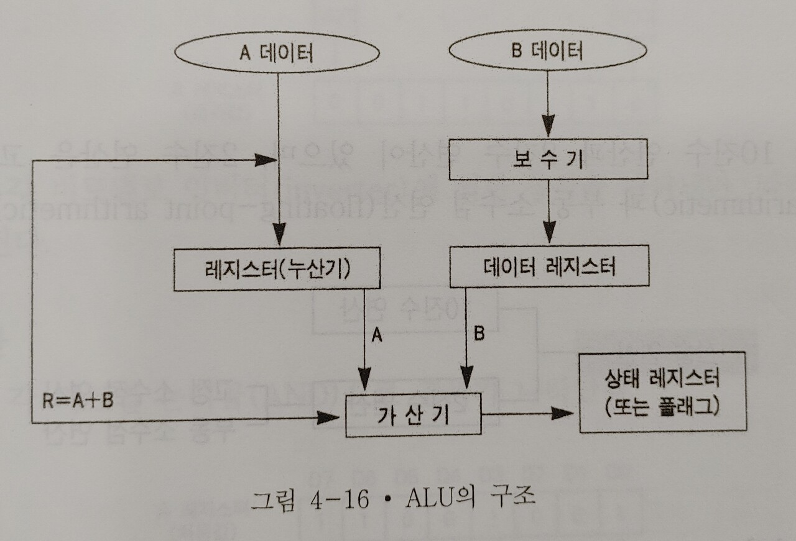

컴퓨터 하드웨어 - 산술 논리 연산 장치
산술 논리 연산 장치(ALU : Arithmetic and Logic Unit)
- 제어 장치의 지시에 따라 실제 자료 처리가 이루어지는 곳
- 사칙연산, 논리연산, 비교연산, 자리 이동(shift) 등을 수행한다.
산술 논리 연산 장치의 구성
- 가산기(adder), 레지스터(register), 보수기(complementary) 등으로 구성된다.

1) 누산기(ACC : accumulator)
- 연산 장치의 중심이 되는 레지스터
- 초기에는 연산될 데이터의 보관 장소로 사용되며, 연산 후에는 산술 및 논리 연산 결과를 일시적으로 보관한다.
- => 연산 결과값을 일시적으로 기억
- => 연산 결과값을 일시적으로 기억
2) 데이터 레지스터(data register)
- 연산에 필요한 데이터가 두 개인 경우, 하나의 데이터를 일시적으로 보관하고 있다가 필요할 때 제공하는 역할을 수행한다.
- 기억 레지스터(storage register)라고도 한다.
- => 연산에 필요한 데이터를 일시적으로 보관
- => 연산에 필요한 데이터를 일시적으로 보관
3) 가산기(adder)
- 누산기와 데이터 레지스터에 보관된 두 값을 더하여 그 계산 결과를 다시 누산기에 보관한다.
4) 상태 레지스터(status register)
- 연산 결과가 양(0)인지 음(1)인지, 또는 자리 올림(carry)이나 오버플로우가 발생했는지 등의 연산에 관계되는 상태와 인터럽트(interrupt) 신호를 기억한다.
5) 보수기(complementary)
- 어떤 수를 보수로 바꾸어 주는 회로로서 뺄셈을 수행할 때 빼는 수를 보수로 바꾸어 가산기에 입력함으로써 감산의 결과를 얻을 수 있다.
- 보수에는 1의 보수와 2의 보수가 있는데 주로 2의 보수를 많이 사용한다.
산술 연산
1) 10진수 연산
- 부호가 있는 10진수 수치 자료의 연산을 수행하는 것
- 가감승제는 팩형 10진수(packed decimal) 형태의 데이터가 사용된다.
2) 2진수 연산
- 고정 소수점 연산과 부동 소수점 연산으로 나누어진다.
- 고정 소수점 연산은 일정한 길이의 바이트에 표시된 고정 소수점 수를 연산하는 것으로 10진수 연산보다 처리 속도가 빠르다.
- 부동 소수점 연산은 부호 비트, 지수부, 소수부로 구성되어 있으며, 부동 소수점 연산을 위해서는 특수 목적을 가진 레지스터가 필요하다.
- 부동 소수점 연산은 매우 큰 수나 작은 수를 다룰 수 있으며 연산 처리 속도가 고속이다.
논리 연산
- 사칙연산을 제외한 문자 처리
- 로드(load), 스토어(store), 분기(branch), NOT, AND, OR 등의 논리 연산과 자리이동(shift), 순환이동(rotate) 등이 있다.
- 이러한 데이터 처리는 비트나 바이트로 처리된다.
- 로드 : 기억 장치에서 CPU의 레지스터로 이동하는 것
- 스토어 : 레지스터에서 기억 장치로 이동하는 것
- 분기 : 명령의 실행 순서를 변경하는 것. 무조건 분기와 조건 분기가 있다.